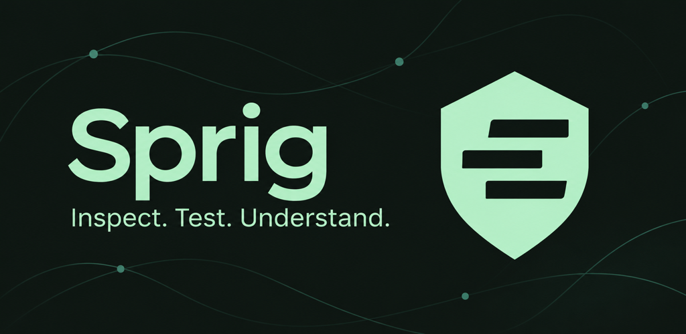

Open beta testing
Sprig is in open beta testing. Features may be incomplete and errors may occur. You can voluntarily share feedback or information you choose to provide at the email below. Remove passwords, tokens, private keys and confidential data before sending. Sprig does not automatically send captures or diagnostics.
cybercraftstudiopro@gmail.comcom.ccs.sprig · Version code: 3 · Android 8.0+
What changed
- English and Ukrainian UI, dialogs, tool settings, Scanner category descriptions and VPN notifications.
- First-launch open-beta notice with explicit acknowledgement and optional email feedback, without automatic attachments.
- Privacy update: scoped local launcher picker, explicit VPN disclosure, and disabled automatic downloadable emoji fonts.
Android 13+ supports a separate app language in system settings. Earlier Android versions follow the device language. Original wire data and technical core/report diagnostics retain their original text.
Foreground-service demonstration
FOREGROUND_SERVICE_SPECIAL_USE · This video was recorded with 0.1 Preview (versionCode 1), before the 0.1.1 localization update. It remains a historical demonstration of that build.
What the recording shows
- 0:00 — User starts capture; Android notification and VPN consent dialogs.
- 0:40 — Local VPN capture becomes active.
- 0:58 — A separate test app completes 20 local requests with zero errors while Sprig runs in the background.
- 1:15 — Ongoing foreground-service notification.
- 1:39 — Sprig shows 20 captured requests with HTTP 200 responses.
- 2:02 — User stops capture; Sprig becomes offline and the VPN indicator disappears.
Why continuous operation is needed
The user starts a real-time VPN inspection session. Delaying or suspending the service would interrupt active connections and lose traffic that restarting cannot recover. The user can stop capture explicitly.
Recorded on a physical Pixel 7a/API 37 on 15 November 2026. Actual screen recording at normal speed, without audio. Demo LAN address and query token are masked; controls, counts and responses are unaltered. Only the local fixture app was selected for capture. No personal browsing traffic is shown.